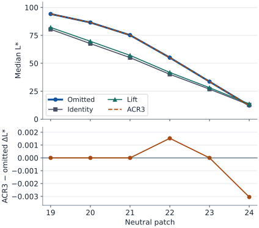

핵심 요약
- 같은 K-3 II RAW 한 장에 톤 곡선 태그만 다른 시험 프로파일 네 개를 적용했습니다. 태그를 생략한 것, 직선(항등)을 적은 것, 가운데를 조금 올린 것(Lift), Adobe SDK의 ACR3 표를 그대로 적은 것입니다. 실제 Lightroom Classic 15.6에서 16비트 TIFF 다섯 개를 내보냈습니다.
- 같은 프로파일로 다시 내보낸 TIFF는 24,064,000개 픽셀이 모두 같았습니다.
- 항등 곡선을 적은 출력은 태그를 생략한 출력보다 크게 어두웠습니다(24패치 평균 ΔE00 12.90). Lift 곡선은 24패치 모두의 밝기를 올렸습니다. 프로파일에 적은 곡선이 출력에 반영됩니다.
- ACR3 표를 적은 출력은 생략한 출력과 거의 같았습니다. 픽셀의 40.48%에서 코드값이 조금 달랐지만 24패치의 색차는 최대 0.0024였습니다.
- RAW 한 장, 현상 설정 하나에서 얻은 결과입니다. Lightroom 내부의 기본 곡선이나 처리 순서를 확정하지 않으며, 카메라 JPEG의 톤을 맞추는 작업도 포함하지 않습니다.
확인 실제 Lightroom 출력에서 잰 것
- TIFF 다섯 개의 전체 RGB 16비트 픽셀 비교와 24패치 색차
- 현상 속성 114개 가운데 프로파일 이름과 지문만 달라짐
- 시험 프로파일 네 개의 공통 태그가 바이트 단위로 같음
정적 분석 SDK 소스를 읽은 것
- ACR3 표 1,025점의 위치와 값
- SDK 예제 렌더러는 기본 표를 선형 보간하고, 프로파일 곡선은 자연 스플라인으로 처리함
모델 실험 조건으로 정한 것
- RAW 한 장(K-3 II #1376)과 현상 설정 하나
- 연구자가 정한 시험 곡선 세 개
- 패치마다 안쪽 200×200픽셀의 중앙값으로 색을 대표
미확인 확인하지 않은 것
- Lightroom 내부의 기본 곡선과 처리 순서
- 다른 노출·조명·Process Version에서의 재현성
- 카메라 JPEG의 톤과의 관계
배경: 톤 곡선 태그와 이 실험의 질문
DCP는 Lightroom이 RAW를 현상할 때 쓰는 카메라 색 프로파일 파일입니다. 색 행렬, 색 보정 표, 톤 곡선 같은 값이 번호가 붙은 항목(태그)으로 들어 있습니다. 이 주제는 카메라의 색 표현을 Lightroom 프로파일로 옮길 수 있는지를 알아봅니다. 그러려면 DCP의 각 태그가 Lightroom에서 실제로 어떻게 작동하는지부터 확인해야 합니다. 이 문서는 그중 톤 곡선 태그를 다룹니다.
| 용어 | 뜻 |
|---|---|
ProfileToneCurve | DCP의 기본 톤 곡선 태그(번호 50940)입니다. 입력과 출력이 0~1인 점 (x, y)의 목록이며, DNG 규격은 점 사이를 3차 스플라인으로 잇도록 권합니다. 일반 프로파일에서는 첫 점이 (0, 0), 끝 점이 (1, 1)이어야 합니다. |
| 생략 | DCP에 이 태그를 넣지 않은 상태입니다. 규격은 기본값을 “없음”이라고만 적고, 태그가 없을 때 현상 프로그램이 어떤 곡선을 쓸지는 정하지 않습니다. |
| 항등 곡선 | 입력을 그대로 출력하는 직선입니다. 점 (0, 0)과 (1, 1) 두 개로 적습니다. |
| ACR3 곡선 | Adobe가 공개한 DNG SDK 소스에 들어 있는 내장 톤 곡선입니다. SDK의 예제 렌더러는 프로파일에 유효한 곡선이 없으면 이 곡선을 씁니다. SDK 주석은 “Default ACR3 tone curve”라고 설명합니다. |
| 패치 | RAW에 찍힌 ColorChecker 색상표의 칸 24개입니다. 19~24번은 흰색에서 검정까지의 무채색(중립) 칸입니다. 위치는 ColorChecker 비교 절차에서 정했습니다. |
| ΔE00, L* | ΔE00는 두 색의 차이를 나타내는 CIEDE2000 색차이고 값이 클수록 차이가 큽니다. L*는 CIELAB 색공간의 밝기 축으로 0이 검정, 100이 흰색입니다. |
| 코드값 | 16비트 TIFF에서 한 채널이 갖는 0~65,535의 정수입니다. |
Lightroom의 코드는 공개되어 있지 않습니다. 그래서 프로파일을 직접 만들어 넣고 출력을 재는 방법을 썼습니다. 실험은 세 가지 질문에 답하도록 짰습니다.
| 질문 | 비교한 TIFF | 답 |
|---|---|---|
| 같은 프로파일로 다시 내보내면 같은 픽셀이 나오는가 | 생략 → 생략 재출력 | 전체 픽셀 일치 |
| 적어 넣은 곡선이 출력에 반영되는가 | 생략 → 항등 → Lift | 항등에서 크게 어두워지고, Lift에서 24패치 L*가 모두 상승 |
| SDK의 ACR3 표를 적으면 생략한 것과 같아지는가 | 생략 재출력 → 명시 ACR3 | 24패치 ΔE00 최대 0.002411 |
프로파일에서 곡선을 빼 두는 것과 직선을 적어 넣는 것은 결과가 다릅니다. 출력만 보면, 곡선을 뺀 결과는 ACR3 표를 적은 결과와 거의 같고 직선을 적은 결과와는 크게 다릅니다.
결과: 생략과 ACR3는 거의 같고 항등은 크게 다릅니다
같은 프로파일은 같은 픽셀을 냈고, 적어 넣은 곡선은 출력에 반영됐으며, ACR3 표를 적은 출력은 생략한 출력과 24패치 색차 0.0024 이내로 같았습니다.
- Lightroom이 내보낸 TIFF (아래 줄은 프로파일 이름)
회색 바탕은 같은 프로파일로 내보낸 TIFF의 묶음입니다. 화살표는 비교 방향(앞 → 뒤)이고, 그 아래 숫자는 전체 픽셀 가운데 달라진 비율과 24패치 ΔE00입니다.
“달라진 픽셀”은 R·G·B 가운데 한 채널이라도 코드값이 다른 픽셀입니다. 명시 ACR3 출력은 픽셀 열 개 중 네 개꼴로 코드값이 달라졌는데도 패치 색차는 0에 가깝습니다. 달라진 폭이 아주 작기 때문입니다.
| 비교 | 달라진 픽셀 | 비율 | 평균 | 중앙값 | P90 | 최대 | 최대 패치 |
|---|---|---|---|---|---|---|---|
| 생략 → 생략 재출력 | 0 | 0% | 0 | 0 | 0 | 0 | — |
| 생략 재출력 → 명시 ACR3 | 9,740,796 | 40.48% | 0.000448 | 0 | 0.001724 | 0.002411 | 21번 |
| 생략 → 항등 | 24,052,467 | 99.95% | 12.89753 | 14.86950 | 17.08194 | 18.01281 | 14번 |
| 항등 → Lift | 24,051,407 | 99.95% | 1.46054 | 1.52804 | 1.87110 | 1.88671 | 2번 |
| 생략 → Lift | 24,053,480 | 99.96% | 11.49751 | 13.26414 | 15.18387 | 16.08916 | 14번 |
P90은 24개 값의 90백분위수입니다. 색차는 패치마다 L*, a*, b* 중앙값을 구한 뒤 그 값끼리 계산했습니다.
명시 ACR3와 생략의 차이는 얼마나 작은가
생략 재출력과 명시 ACR3 사이에서 코드값은 채널마다 가장 많이 내려간 곳이 −30, 가장 많이 올라간 곳이 +11(B는 +10)이었습니다. 전체 픽셀로 평균한 절대 차이는 R·G·B 각각 0.5860, 0.5646, 0.5477 코드값입니다. 65,535 단계 가운데 한 단계에도 못 미칩니다.
패치 색차는 칸 안 40,000픽셀의 중앙값끼리 비교한 값입니다. 중앙값이 같아도 칸 안의 픽셀 하나하나는 다를 수 있습니다. 실제로 24개 칸의 960,000픽셀 가운데 226,883개에서 코드값이 달랐습니다.
코드값 차이의 범위와 채널별 평균
| 비교 | 가장 작은 차이 | 가장 큰 차이 | 절대 차이의 평균 | 패치 영역에서 달라진 픽셀 (960,000개 중) |
|---|---|---|---|---|
| 생략 → 생략 재출력 | 0 / 0 / 0 | 0 / 0 / 0 | 0 / 0 / 0 | 0 |
| 생략 재출력 → 명시 ACR3 | −30 / −30 / −30 | +11 / +11 / +10 | 0.5860 / 0.5646 / 0.5477 | 226,883 |
| 생략 → 항등 | −21,860 / −21,844 / −22,365 | +1,213 / +2,168 / +2,194 | 4,946.7657 / 4,779.7009 / 4,793.3495 | 960,000 |
| 항등 → Lift | −389 / −270 / −434 | +2,141 / +2,072 / +2,199 | 707.7692 / 702.4026 / 710.9148 | 960,000 |
| 생략 → Lift | −19,987 / −19,896 / −20,166 | +956 / +2,431 / +2,555 | 4,410.2021 / 4,236.7265 / 4,208.3374 | 960,000 |
24패치별 밝기 변화와 색차
| 패치 | 생략 → 항등 | 항등 → Lift | 생략 재출력 → 명시 ACR3 | ||
|---|---|---|---|---|---|
| ΔL* | ΔE00 | ΔL* | ΔE00 | ΔE00 | |
| 1 · dark skin | −8.270 | 8.231 | +1.363 | 1.091 | 0 |
| 2 · light skin | −19.576 | 16.529 | +1.969 | 1.887 | 0 |
| 3 · blue sky | −14.961 | 15.320 | +1.678 | 1.523 | 0 |
| 4 · foliage | −10.928 | 11.081 | +1.498 | 1.269 | 0 |
| 5 · blue flower | −17.726 | 17.125 | +1.811 | 1.762 | 0 |
| 6 · bluish green | −19.948 | 15.516 | +2.051 | 1.796 | 0 |
| 7 · orange | −17.328 | 17.116 | +1.831 | 1.868 | 0.001402 |
| 8 · purplish blue | −10.741 | 10.646 | +1.492 | 1.263 | 0 |
| 9 · moderate red | −13.854 | 14.633 | +1.625 | 1.471 | 0.000746 |
| 10 · purple | −4.417 | 6.763 | +1.167 | 0.904 | 0 |
| 11 · yellow green | −20.014 | 16.537 | +2.043 | 1.843 | 0 |
| 12 · orange yellow | −19.312 | 17.001 | +1.981 | 1.874 | 0 |
| 13 · blue | −4.619 | 7.031 | +1.193 | 0.951 | 0 |
| 14 · green | −17.450 | 18.013 | +1.801 | 1.780 | 0 |
| 15 · red | −10.397 | 11.270 | +1.401 | 1.181 | 0.000952 |
| 16 · yellow | −19.414 | 14.999 | +2.083 | 1.721 | 0 |
| 17 · magenta | −14.575 | 15.537 | +1.663 | 1.533 | 0 |
| 18 · cyan | −15.833 | 16.370 | +1.733 | 1.643 | 0.001844 |
| 19 · white | −13.718 | 9.019 | +1.666 | 1.156 | 0 |
| 20 · neutral 8 | −18.883 | 13.523 | +2.074 | 1.631 | 0 |
| 21 · neutral 6.5 | −20.136 | 16.543 | +2.008 | 1.872 | 0.002411 |
| 22 · neutral 5 | −14.913 | 14.740 | +1.675 | 1.496 | 0.001444 |
| 23 · neutral 3.5 | −6.719 | 5.369 | +1.295 | 0.976 | 0 |
| 24 · black | +0.568 | 0.628 | +0.870 | 0.564 | 0.001952 |
패치마다의 L*, a*, b* 중앙값은 lightroom-tone-comparison.json의 comparisons[].patches에 있습니다.
무채색 칸 여섯 개로 본 밝기 변화
항등 곡선은 밝은 회색을 크게 낮추고 검정 칸만 조금 올렸습니다. Lift는 여섯 칸을 모두 올렸고, ACR3와 생략의 차이는 측정이 구분할 수 있는 가장 작은 단위 수준이었습니다.

위 그래프는 TIFF에서 잰 L* 중앙값이고 선은 측정점을 이은 것입니다. 생략(Omitted)과 명시 ACR3는 겹쳐서 한 선으로 보입니다. 아래 그래프는 그 둘의 차이만 따로 떼어 세로축을 크게 확대한 것입니다. 그림 속 영어 표기는 Omitted=생략, Identity=항등, Neutral patch=무채색 칸입니다.
| 패치 | 생략 | 항등 | Lift | Lift − 항등 | 명시 ACR3 − 생략 재출력 |
|---|---|---|---|---|---|
| 19번 · white | 94.11459 | 80.39674 | 82.06302 | +1.66628 | 0 |
| 20번 · neutral 8 | 86.48508 | 67.60204 | 69.67574 | +2.07370 | 0 |
| 21번 · neutral 6.5 | 75.18730 | 55.05150 | 57.05959 | +2.00809 | 0 |
| 22번 · neutral 5 | 55.04845 | 40.13581 | 41.81124 | +1.67544 | +0.001526 |
| 23번 · neutral 3.5 | 33.57595 | 26.85740 | 28.15289 | +1.29549 | 0 |
| 24번 · black | 12.17670 | 12.74434 | 13.61410 | +0.86976 | −0.003052 |
- 생략 → 항등 — 무채색 칸의 L* 변화는 −20.13580에서 +0.56764 사이였습니다. 중간 회색(21번)이 가장 많이 어두워졌고 검정(24번)만 조금 밝아졌습니다. 24패치 전체로 보면 23개가 어두워졌습니다.
- 항등 → Lift — 여섯 칸의 L*가 0.86976~2.07370 높아졌습니다. 유채색 칸까지 포함해 24패치 모두 L*가 올랐습니다.
- 생략 재출력 → 명시 ACR3 — L*는 22번에서 +0.001526, 24번에서 −0.003052 달라졌고 나머지는 같았습니다. a*는 21번에서만 +0.001945 달라졌고 b*는 여섯 칸 모두 같았습니다.
+0.001526이라는 크기는 변환 과정을 검증할 때 16비트 입력의 1코드 차이가 남긴 L* 차이와 같습니다(실제 TIFF 6개 비교의 측정 방법 참고). 명시 ACR3와 생략의 L* 차이는 그 한 단계와 두 단계에 해당합니다.
ACR3 곡선의 출처는 Adobe DNG SDK의 내장 표입니다
명시 ACR3 프로파일의 곡선은 Adobe DNG SDK 1.7.1 소스에 있는 표의 값 1,025개를 그대로 옮겨 적은 것입니다.
- 표를 읽습니다 SDK의
dng_render.cpp208–482행에 있는 함수dng_tone_curve_acr3_default::Evaluate의 순방향 표에서 세로 좌표 1,025개를 읽었습니다. - 가로 좌표를 붙입니다 i번째 값에
x = i/1024를 짝지어 (x, y) 점 1,025개를 만들었습니다. - 태그로 적습니다 32비트 실수(FLOAT) 2,050개, 8,200바이트로 직렬화해
ProfileToneCurve태그에 넣었습니다.
표가 같아도 점 사이를 잇는 방법은 두 경로가 다릅니다.
| 경우 | 쓰는 곡선 | 점 사이를 잇는 방법 | 소스 위치 |
|---|---|---|---|
| 프로파일에 곡선이 없을 때 | 내장 ACR3 표 | 선형 보간 | dng_render.cpp 475–482행 |
| 프로파일에 곡선이 있을 때 | 프로파일의 점 목록 | 자연 스플라인(양 끝의 2차 미분이 0인 3차 스플라인) | dng_tone_curve.cpp 116–129행, dng_spline.cpp 84–181행 |
어느 경로를 탈지 고르는 부분은 dng_render.cpp 2160–2228행에 있습니다. 두 방식은 점 사이에서 값이 달라질 수 있습니다. 같은 1,025점을 선형 보간한 값과 자연 스플라인으로 이은 값의 차이는 0~1 척도에서 최대 9.51×10⁻⁶으로 기록되어 있습니다.
SDK는 Adobe가 공개한 예제 코드이며 Lightroom 자체가 아닙니다. Lightroom TIFF에서 관찰한 작은 차이의 원인으로 보간 방식은 가능성 가운데 하나일 뿐입니다. 이 실험으로 Lightroom의 내부 기본 곡선과 처리 순서를 정할 수는 없습니다.
SDK와 태그의 SHA-256
- SDK ZIP
c1d3a545ed45b150e59af2e6aa0695c1551f0e2bed34ad87436898a05194d2b1- ZIP 안의
dng_sdk_1_7_1/dng_sdk/source/dng_render.cpp e8920b456e46b9b11a4bb775694aa516c9b5afe2998926acb0c4086eca71529c- 태그 50940에 넣은 8,200바이트
51dac135a83970b08279dcdcc59839b851c66c7069501aabbbd014ba57715b01
2026-11-10에 Adobe 배포 링크에서 받은 ZIP의 SHA-256이 위 값과 같았습니다. SDK의 표 값 자체는 이 저장소에 싣지 않았습니다.
실험 조건: 톤 곡선 태그만 바꾸고 나머지는 고정했습니다
네 프로파일은 이름과 톤 곡선 태그만 다르고, 다섯 TIFF의 현상 설정은 프로파일 이름과 지문을 빼면 모두 같습니다.
시험 프로파일 네 개
| 이름 | 프로파일 이름(ProfileName) | 톤 곡선 태그의 점 | DCP 크기 |
|---|---|---|---|
| 생략 | PENTAX RAW matrix test 1376 | 태그 없음 | 272바이트 |
| 항등 | PENTAX 1376 Tone Identity v1 | (0, 0), (1, 1) FLOAT 4개 · 16바이트 | 302바이트 |
| Lift | PENTAX 1376 Tone Lift v1 | (0, 0), (0.5, 0.53125), (1, 1) FLOAT 6개 · 24바이트 | 306바이트 |
| 명시 ACR3 | PENTAX 1376 ACR3 Control v1 | SDK 표의 1,025점, x = i/1024 FLOAT 2,050개 · 8,200바이트 | 8,484바이트 |
색 행렬과 광원은 RAW 파일(K-3 II DNG #1376)에 카메라가 적어 둔 값입니다. Lift 곡선은 항등 곡선의 가운데에 점 (0.5, 0.53125)를 하나 더한 것입니다. 태그 구성과 DCP를 만드는 도구는 DCP 생성·검증 개요에, RAW의 출처는 시험용 RAW 준비에 있습니다.
Lightroom에서 고정한 것
- 프로그램
- Adobe Photoshop Lightroom Classic 15.6 (Windows), Process Version 15.4
- 입력
- 같은 RAW의 가상 사본. raw.pixls.us #1376, PENTAX K-3 II, CC0
- 화이트밸런스·노출
- As Shot 5200 K / Tint +2, 노출 0 EV
- 크롭
- 없음
- 출력
- ProPhoto RGB, 비압축 RGB 16비트 TIFF, 6016×4000
- 기록일
- 2026-11-08
TIFF의 XMP에 기록된 현상 속성 114개를 비교했습니다. 프로파일을 바꾼 TIFF에서는 프로파일 이름(CameraProfile)과 프로파일 지문(CameraProfileDigest)만 달랐고, 중첩 요소 6개는 같았습니다. 내보낼 때마다 바뀌는 파일 날짜와 문서 ID 같은 기록은 따로 비교했습니다. 생략 TIFF 두 개는 그런 기록 때문에 파일 해시가 서로 다르지만, 디코딩한 픽셀 배열의 해시는 같습니다. 프로파일 지문이 무엇인지는 프로파일 지문 재현에서 다룹니다.
색차를 잰 방법
- 측정 영역 — 실제 TIFF 6개 비교와 같은 24개 영역을 썼습니다. 각 패치 안쪽의 200×200픽셀입니다.
- 위치 확인 — 차트의 19개 지점에서 TIFF끼리 위치가 어긋나지 않았는지 확인했습니다. 생략 재출력과 명시 ACR3 사이에서 추정한 최대 잔차는 0.005806픽셀입니다. 픽셀이 완전히 같은 생략 두 개 사이에서도 0.005841픽셀이 나오므로, 이 값을 실제 영상 이동으로 해석하지 않았습니다. 항등과 Lift에서는 추정값이 각각 0.392, 0.364픽셀이었고 검사 기준인 1픽셀보다 작습니다.
- 끝값 — 생략, 생략 재출력, 명시 ACR3의 영상 전체에서 코드값 0과 65,535의 개수가 채널마다 같았습니다. 다섯 TIFF 모두 측정 영역 안에는 두 끝값이 없었습니다.
- 색 변환 — TIFF에 들어 있는 ICC 프로파일을 Little CMS로 처리해 D50 기준 CIELAB(32비트 실수)로 바꿨습니다. 변환 의도는 상대 색도, 검정점 보정은 끔입니다.
- 색차 — 패치마다 L*, a*, b*의 중앙값을 구하고 그 값에 ΔE00를 적용했습니다(kL=kC=kH=1). 영역을 고른 근거와 절차는 ColorChecker 비교 절차에 있습니다.
DCP 네 개의 파일과 태그 해시
| 이름 | 파일 | 파일 SHA-256 | 톤 곡선 태그 SHA-256 |
|---|---|---|---|
| 생략 | pentax-k3ii-1376-matrix-test.dcp | 6aa402a77f6b41f9fa37e99f1bd6911447e74c112eb7f7601c8c3bb116570ee4 | — |
| 항등 | pentax-k3ii-1376-tone-identity-v1.dcp | 7fde7d8708ef93324ff5c76e893fa1ecbb2fc4c49ba1269a5d4c3418b65d92f4 | d25b949c65312b91424a3cabd3065dfe18bc73e7cd8893229e9494cd75c16d92 |
| Lift | pentax-k3ii-1376-tone-lift-v1.dcp | f106554b266df62c4d4a0ba4a86e87143fe872e53963c8e8aa37775466065fbf | a572e30ae1e7dd08186e506f2c2223a0edc4e19b9144c98ef978bff1922ad1c1 |
| 명시 ACR3 | pentax-k3ii-1376-acr3-control-v1.dcp | d9bd4d7bfecfcddbbdb3fd88c87bb487bf53af06221fb66b5ada8adb0345cd9f | 51dac135a83970b08279dcdcc59839b851c66c7069501aabbbd014ba57715b01 |
| 태그 (번호) | 개수와 값 | 태그 데이터 SHA-256 |
|---|---|---|
UniqueCameraModel (50708) | 개수 14 · 값 PENTAX K-3 II | bbc1e8b5068f037b4a01948845f0977070d04f8eff4062315c90469ed5ed22df |
ColorMatrix1 (50721) | 개수 9 | 5fa1662734a0cfefb497a539f4979d09aa0f1b8b8d21f782c4679fb298dc4cb0 |
ColorMatrix2 (50722) | 개수 9 | d01c699c8737385dba815ceff0d1af5e2e28a96aacb5ec4c4ac031656b53c208 |
CalibrationIlluminant1 (50778) | 개수 1 · 값 17 | d94e7f1e9bb1f8a9b90996ba12c461b84956f0e7f230145cc594c2f80b067aa0 |
CalibrationIlluminant2 (50779) | 개수 1 · 값 21 | 78b4be1f9eeef9da65c393e4385f67edd142709b400ca7d900bd952e0c3cf727 |
광원 값 17은 표준광 A, 21은 D65입니다. 생략 DCP에는 태그 50940이 없습니다.
TIFF 다섯 개의 해시와 프로파일 지문
| TIFF | 대상 | SHA-256 | XMP의 CameraProfileDigest |
|---|---|---|---|
| 생략 | 파일 | matrix-test-prophoto/pentax-k3ii-1376.tif5a65e3b4349d97df77964b2871fb07934b0d1e444753fe8ff8ac5a08de103bef | 1C7CF75BBFB3AA224BCEB9DAF7FBBBC9 |
| 픽셀 | 46866699e22284aa77e7b018ca405129bd6945af4468e02e1f5c2536e6497558 | ||
| 항등 | 파일 | tone-identity-prophoto/pentax-k3ii-1376.tif9a3dd45eaa7ab6ba288d8cb5ee4298a37b8c49f474df536bda92ac77223ce615 | 782E03B3FA73C7D0E8D7766B6B2FEB8F |
| 픽셀 | 45b0560315b7da6384c24ac5c6d527248662d0d577081954949f96974f63c746 | ||
| Lift | 파일 | tone-lift-prophoto/pentax-k3ii-1376.tifc72fe7978cb6ae0511b27a9b958673377355fb756c9f850cd6c410ece46a9fbb | 763036625F340E29923B3CBCA99F0C68 |
| 픽셀 | bfcdeb8dded06acc87a12b39e74dc253997fd06a4865851f991905b550b254c0 | ||
| 생략 재출력 | 파일 | tone-omitted-repeat-prophoto/pentax-k3ii-1376.tifbb72136fc661267c14cc333acc890007c81fd53f393f152e8b0016b3ff629d25 | 1C7CF75BBFB3AA224BCEB9DAF7FBBBC9 |
| 픽셀 | 46866699e22284aa77e7b018ca405129bd6945af4468e02e1f5c2536e6497558 | ||
| 명시 ACR3 | 파일 | tone-acr3-prophoto/pentax-k3ii-1376.tif0add52b07a6f6f0ec00fdc5f95c2114a3d78f0f3b743848ae9213c8335d7e353 | D8DD6BF0BBFA902108D77C408E0D046C |
| 픽셀 | e66e206348a7a44e118551805f898eb1d96aeff9360fa4008ed2985139a4ce40 |
픽셀 해시는 디코딩한 RGB 16비트 값을 행 순서대로 little-endian으로 늘어놓고 계산했습니다. 생략과 생략 재출력은 픽셀 해시가 같습니다. 생략 TIFF는 실제 TIFF 6개 비교에서 시험 DCP의 ProPhoto RGB 출력으로 쓴 파일과 같은 파일입니다.
위치 확인 값, 끝값 개수, 현상 설정 전체
| TIFF | 기준 | 최대 이동(픽셀) | 최소 상관 | 코드값 0 | 코드값 65,535 |
|---|---|---|---|---|---|
| 생략 | 생략 | 0.005841 | 1.0000 | 14,777 / 14,957 / 10,771 | 14 / 5 / 115 |
| 항등 | 생략 | 0.391892 | 0.9745 | 14,777 / 14,957 / 10,771 | 9 / 5 / 36 |
| Lift | 생략 | 0.363603 | 0.9778 | 14,777 / 14,957 / 10,771 | 8 / 5 / 39 |
| 생략 재출력 | 생략 | 0.005841 | 1.0000 | 14,777 / 14,957 / 10,771 | 14 / 5 / 115 |
| 명시 ACR3 | 생략 재출력 | 0.005806 | 1.0000 | 14,777 / 14,957 / 10,771 | 14 / 5 / 115 |
다섯 TIFF에 공통으로 기록된 현상 설정: ProcessVersion=15.4, WhiteBalance=As Shot, Temperature=5200, Tint=+2, Exposure2012=0.00, Contrast2012=0, Highlights2012=0, Shadows2012=0, Whites2012=0, Blacks2012=0, HasCrop=False, CropTop=0, CropLeft=0, CropBottom=1, CropRight=1, CropAngle=0, LensProfileEnable=0, AutoLateralCA=0, Sharpness=40, SharpenRadius=+1.0, SharpenDetail=25, SharpenEdgeMasking=0, LuminanceSmoothing=0, ColorNoiseReduction=25, HDREditMode=0. 현상 설정에 남아 있는 캡처 샤프닝 40과 색 노이즈 감소 25도 다섯 파일에서 같습니다.
파일 기록의 차이: TIFF 태그에서는 DateTime과 ImageResources(생략 두 개 사이에서는 DateTime만), 현상 속성이 아닌 XMP에서는 DocumentID, History, InstanceID, MetadataDate, ModifyDate가 달랐습니다.
한계와 남은 과제
- 한 장면, 한 설정 — 명시 ACR3는 이 장면과 현상 설정에서 생략 출력에 가까웠습니다. 다른 노출·조명·Process Version에서도 그런지는 확인하지 않았습니다.
- Lightroom 내부 — 출력이 가깝다는 사실만으로 Lightroom이 내부에서 SDK와 같은 표, 같은 순서로 처리한다고 말할 수 없습니다. 남은 작은 차이의 원인도 정하지 못했습니다.
- 카메라 JPEG과의 관계 — 이 실험은 카메라 JPEG의 톤을 추정하거나 색을 맞추는 보정을 포함하지 않습니다. 시험 프로파일은 대조용이며 카메라 색을 맞춘 최종 프로파일이 아닙니다.
- 측정 단위 — 색차는 패치 중앙값으로 계산했습니다. 패치 안 픽셀 단위의 차이나 차트 밖 영역의 차이는 전체 픽셀 비교의 통계로만 다뤘습니다.
- 따로 통제하지 않은 태그 — 시험 DCP에는 검정 기준 처리를 지정하는
DefaultBlackRender태그가 없습니다. DNG 규격의 기본값은 0(Auto)이고, 이때 현상 프로그램은 영상에 따라 검정 기준을 자동으로 뺄 수 있습니다. 이 동작이 결과에 미친 영향은 재지 않았습니다.
같은 방식으로 색 보정 표 태그를 시험한 결과는 LookTable 대조 실험에 있습니다.
재현 방법
시험 DCP 세 개 다시 만들기
기준 레시피 JSON은 CC0 RAW #1376의 모델 이름·색 행렬·광원으로 작성한 것입니다. 첫 명령으로 생략 DCP를 만들고, 둘째 명령에 Adobe DNG SDK 1.7.1 ZIP을 주면 항등·Lift·ACR3 DCP가 만들어집니다. 세 결과는 실험에 쓴 파일과 바이트 단위로 같습니다. 생성기는 기준 JSON, 생략 DCP, SDK ZIP, 결과 파일의 해시를 모두 검사하며 이미 있는 폴더에는 쓰지 않습니다. SDK ZIP은 Adobe 배포처에서 따로 받아야 합니다.
python -B tools/profile_bridge.py analysis/lightroom-matrix-1376.json baseline-1376.dcp
python -B tools/build_lightroom_tone_controls.py \
--baseline-json analysis/lightroom-matrix-1376.json --baseline-dcp baseline-1376.dcp \
--sdk-zip dng-sdk.zip --output-dir tone-controls이 단계는 Python 3.11 이상의 표준 라이브러리만 씁니다. Lightroom에 설치하고, 프로파일을 고르고, 내보내는 일은 이 도구가 하지 않습니다.
기록한 TIFF 측정값 다시 확인하기
Python 환경에 NumPy, OpenCV, Pillow, scikit-image, tifffile을 설치하고 Little CMS의 tificc를 PATH에 둡니다. 다른 위치에 있으면 --tificc로 지정합니다. 기록할 때 쓴 도구 버전은 JSON에 있습니다(OpenCV 4.13.0, NumPy 1.26.4, scikit-image 0.24.0, tifffile 2023.4.12, tificc 6.3, Little CMS 2.12).
exports아래의matrix-test-prophoto,tone-identity-prophoto,tone-lift-prophoto,tone-omitted-repeat-prophoto,tone-acr3-prophoto폴더에 각각 같은 이름의 TIFFpentax-k3ii-1376.tif를 둡니다.profiles에는 JSON의inputs.profiles에 적힌 DCP 네 개를 둡니다.scratch는 변환 중간 파일을 둘 빈 폴더로 미리 만들어 둡니다.
python -B tools/check_lightroom_tone.py --raw tone-fixtures/pentax-k3ii-1376.dng \
--exports tone-fixtures/exports --profiles tone-fixtures/profiles \
--scratch tone-fixtures/scratch --output tone-fixtures/tone-replay.json스크립트는 파일 해시가 기록과 같은 입력만 받고, 다시 잰 값이 공개 JSON과 다르면 실패합니다. 만들어진 tone-replay.json의 SHA-256을 analysis/lightroom-tone-comparison.json과 비교해도 됩니다.
원본 TIFF, DCP 파일, SDK의 표 값은 저장소에 포함되어 있지 않습니다. 이 명령은 이미 가진 파일의 해시와 측정값을 검증하는 용도입니다. Lightroom에서 새로 내보낸 TIFF는 픽셀이 같아도 날짜와 ID 때문에 파일 해시가 달라집니다.
근거 파일과 참고 자료
- lightroom-tone-comparison.json — 다섯 TIFF와 네 DCP의 해시, 전체 픽셀 비교, 패치별 Lab과 색차, 현상 설정, SDK 출처
- lightroom-tone-controls.svg — 무채색 칸의 L* 그래프
- lightroom-matrix-1376.json — 생략 DCP를 만드는 기준 레시피(CC0 RAW의 색 행렬과 광원)
- tools/build_lightroom_tone_controls.py — 항등·Lift·ACR3 DCP 생성기 · tests/test_lightroom_tone_controls.py — 합성 입력으로 생성기를 검사하는 테스트
- tools/check_lightroom_tone.py — TIFF 측정 재현 스크립트 · tools/profile_bridge.py — JSON 레시피를 DCP로 쓰는 도구
- 외부 자료: Adobe DNG 규격 1.7.1.0(51쪽 ProfileToneCurve, 62쪽 DefaultBlackRender) · Adobe DNG 안내와 SDK 배포 · ISO/CIE 11664-6 CIEDE2000 색차식 · Sharma·Wu·Dalal의 CIEDE2000 구현 검증 자료 · raw.pixls.us RAW 저장소(CC0)